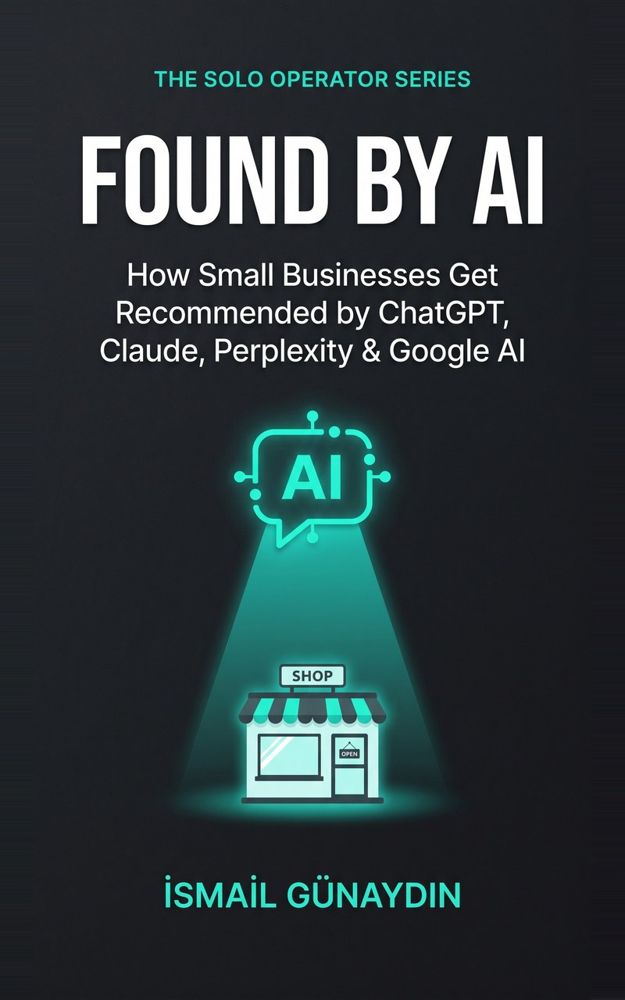
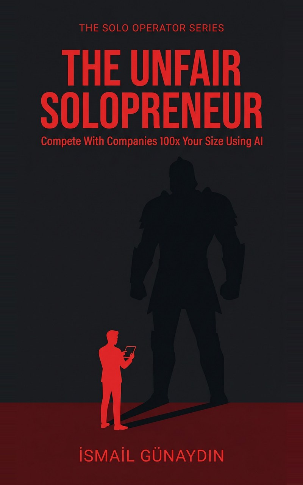
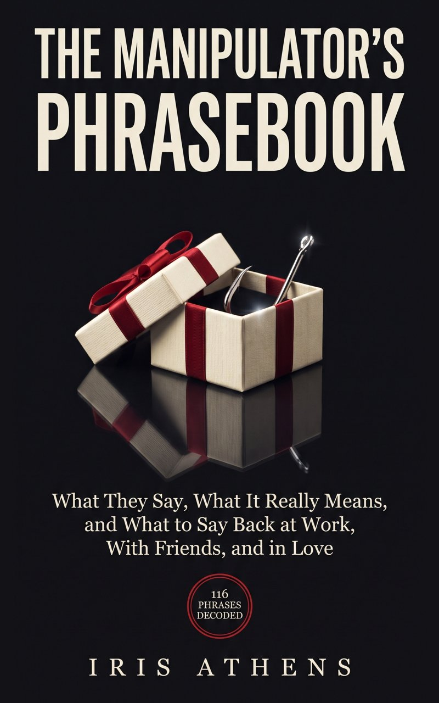
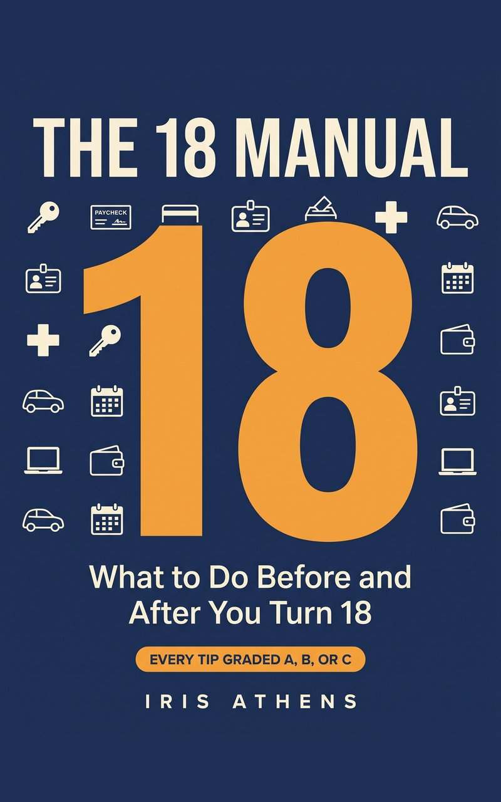

Free Book Guides: practical checklists, templates and slides from 16 nonfiction books
Each book below comes with free Google Docs, Sheets, Slides and printable PDFs you can use today, plus a website with more free tools. Pick a topic, open what you need, and keep it.
Run a one-person business with AI
The Leverage StackFree guides and tools from The Leverage Stack by İsmail Günaydın: how to delegate with no employees, a time audit template, a solopreneur AI...

Found by AIFree guides and tools from the book Found by AI by İsmail Günaydın: how small businesses get recommended by ChatGPT, Claude, Perplexity and ...

The One-Person MillionFree guides and tools from The One-Person Million by İsmail Günaydın: how to scale a one-person business without hiring, a freelance pricing...

The Unfair SolopreneurFree guides and tools from The Unfair Solopreneur on how small businesses and solopreneurs compete with companies many times their size, wit...
AI Won't Run Your Business. You Will.Free guides and tools from AI Won't Run Your Business. You Will. by İsmail Günaydın: fact check AI answers, keep a decision log, and keep yo...

Claude Code for Non-ProgrammersFree guides and tools from Claude Code for Non-Programmers (2027 Edition): a guide to stopping hallucinations, a 30-day learning plan sheet,...
Think and decide better
The Genius LabFree guides and tools from The Genius Lab by Ada Fenwick: thinking drills from Einstein, Feynman, Darwin and Da Vinci, each checked against ...

Mental Models That Actually WorkFree guides and tools from Mental Models That Actually Work by Ada Fenwick: a decision journal guide, a mental models cheat sheet, a slide d...

The Manipulator's PhrasebookFree guides and tools from The Manipulator's Phrasebook by Iris Athens: money pressure and scam phrases, a 30-day red flag checklist, the bi...
Family, relationships and life stages

The 20-Minute Couples WorkbookFree guides and tools from The 20-Minute Couples Workbook by Iris Athens: listening, check-ins, relationship myths and fair fighting rules f...

What Do I Say If...?Free guides and tools from What Do I Say If...? by Iris Athens: safe adults, role play safety scenarios, personal safety rules and an emerge...

The 18 ManualFree guides and tools from The 18 Manual by Iris Athens: renting your first apartment, a used car buying checklist, scams targeting young ad...
Retirement, Medicare and later life

The Year You Turn 65Free guides and tools from The Year You Turn 65 by Nancy Whitaker: Medicare and Social Security deadlines for married couples, a paperwork t...

The Year You RetireFree guides and tools from The Year You Retire by Nancy Whitaker: adjusting to retirement, a retirement organizer spreadsheet, programs for ...

The Year You Arrived: 1957Free guides and tools from The Year You Arrived: 1957 by Nancy Whitaker: a guide to interviewing a parent born in 1957, a month-by-month 195...
Classic Chair Tai Chi for SeniorsFree guides and tools from Classic Chair Tai Chi for Seniors by Nancy Whitaker: seated Eight Brocades, a 6-week chair tai chi plan, the 24-f...